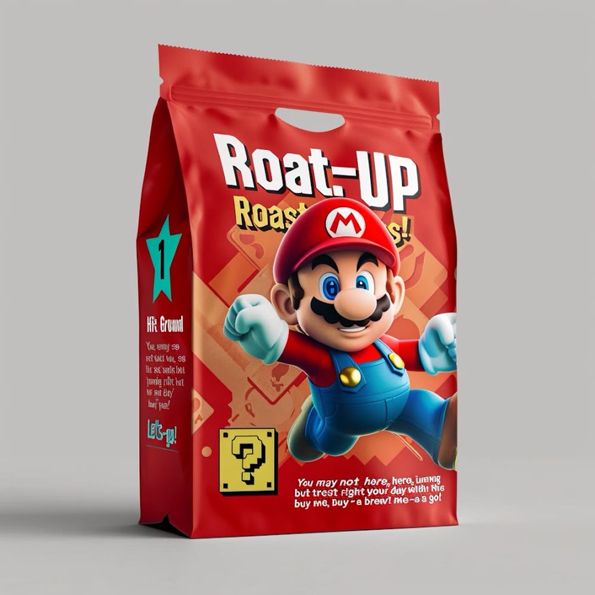
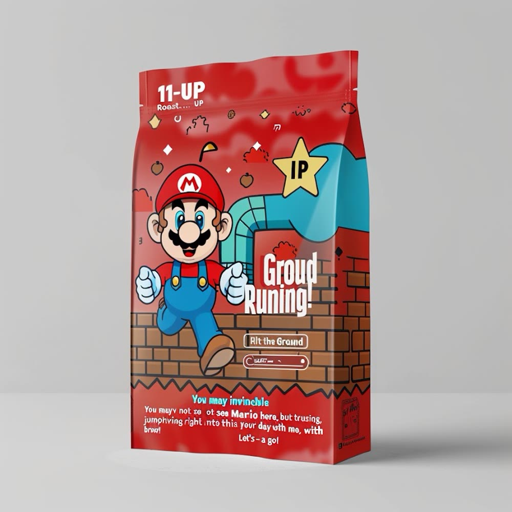
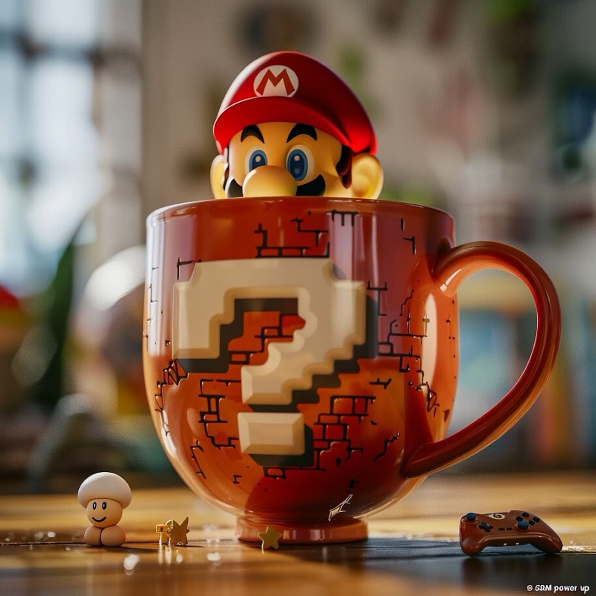
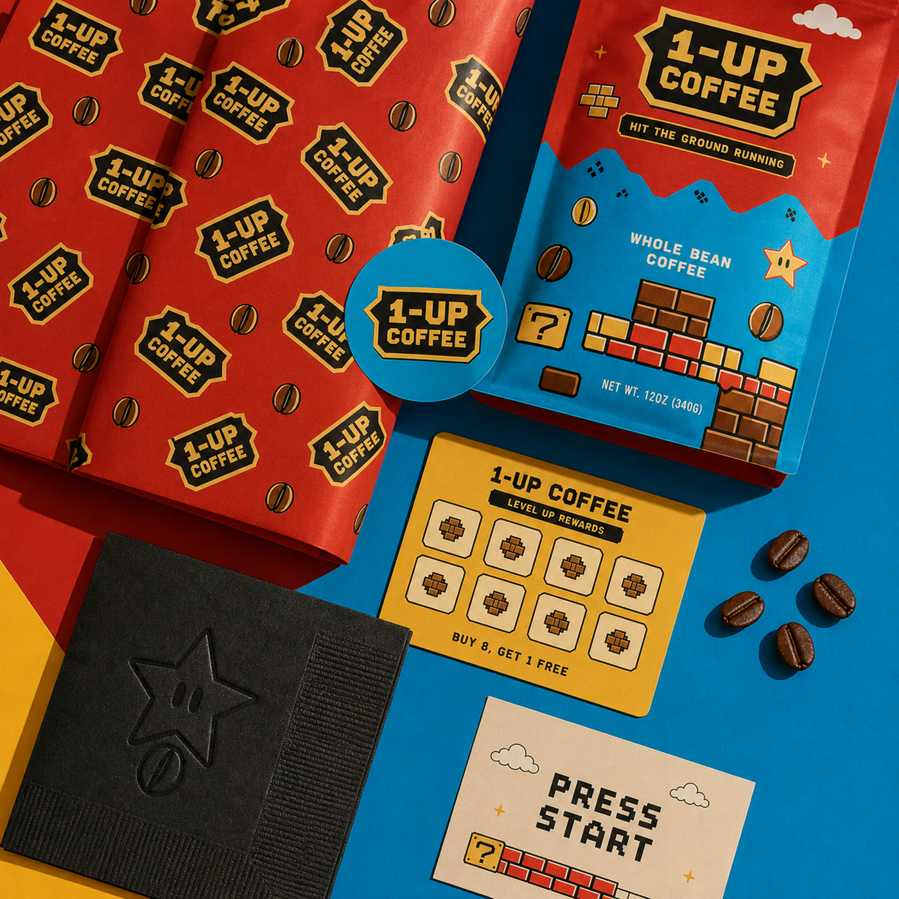
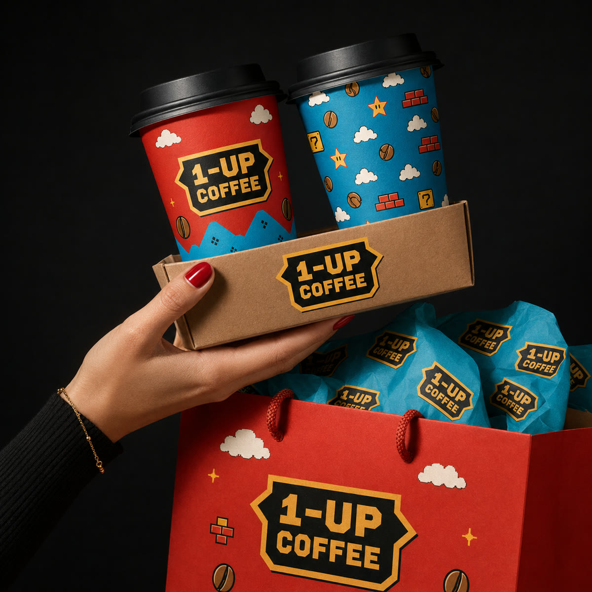
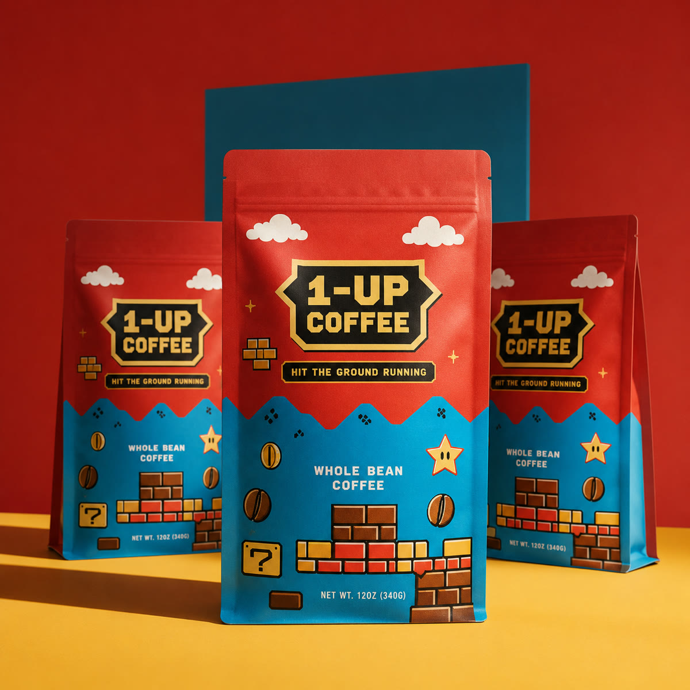
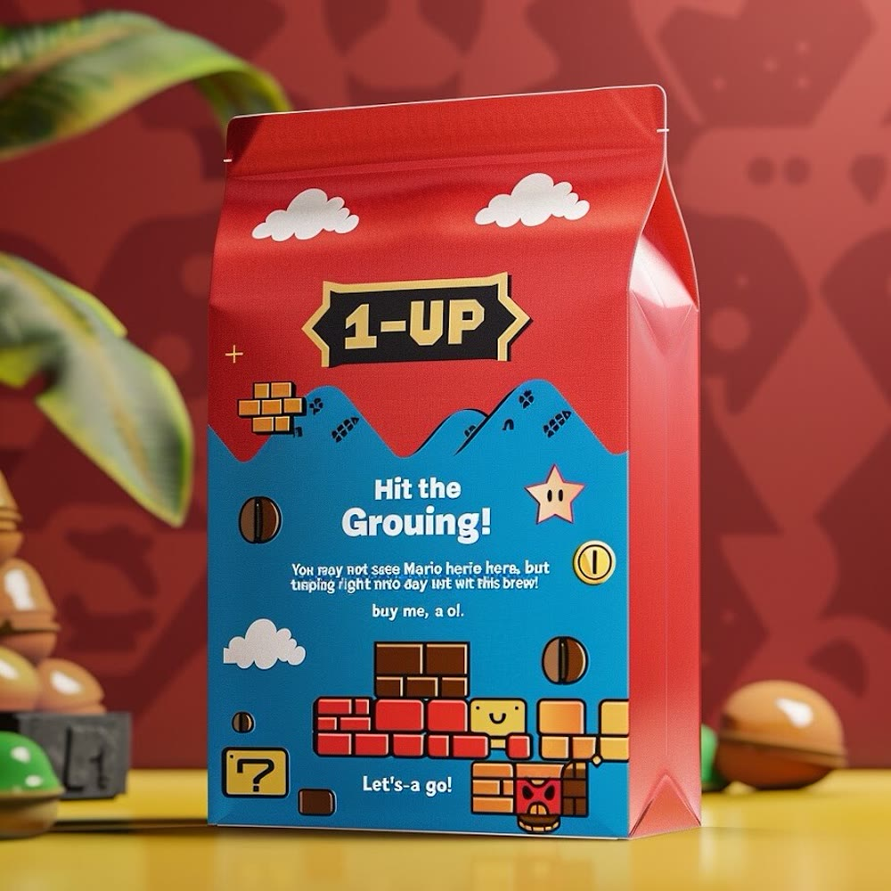

1-UP Coffee × Super Mario
A power-up in every bag: a full identity for a Mushroom Kingdom coffee roaster — brick-pattern packaging, a question-block mug, and a jolt strong enough for an extra life.
The Roast Lineup
1-UP
Hit the Ground Running
The everyday bag — bright, bold, ready before the first level loads.

Roast-UP
Roasters' Blend
Full-power roast, fist raised — the one for a hard level.

11-UP
Extra Life Roast
One more cup, one more life — the invincibility star blend.
The Mug

Hardware
Break the block, get the boost
A question-block mug with Mario himself peeking out — the brand's signature gag, carried from the bag all the way to the counter.
Packaging System

Identity
Press start, every touchpoint
Brick-and-star pattern carried across bags, a "Press Start" card and a notebook — a system built to hold together at any scale.
In the Wild


